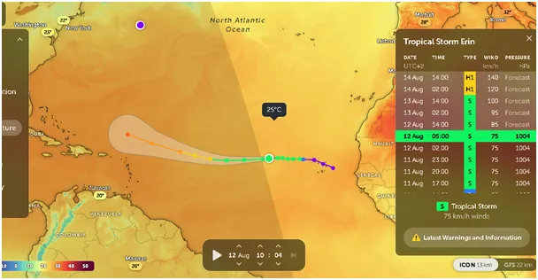
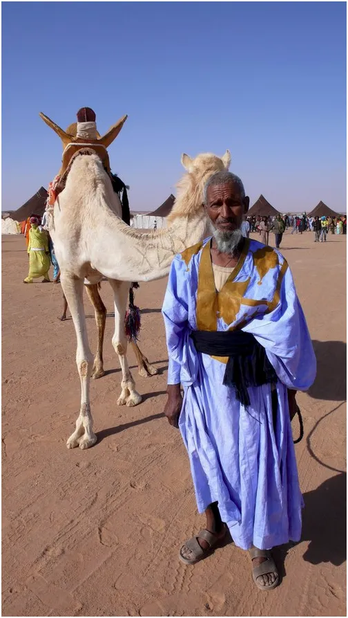
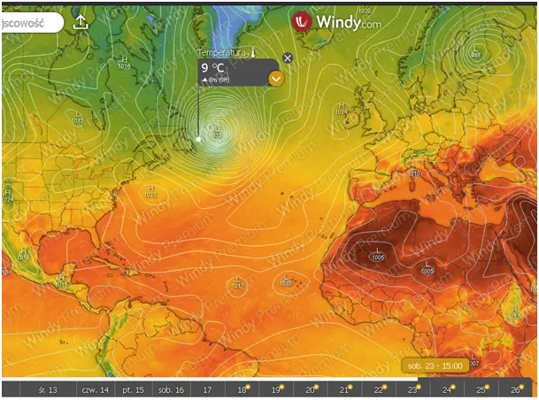

Urszula Wodę Leje a deszcz jej w twarz pada.
"Ursula von der Leyen poleciała swoim odrzutowcem, aby pokonać 47-kilometrową trasę z Wiednia do Bratysławy. Nie uszło to uwadze opinii publicznej, ponieważ leciała na spotkanie klimatyczne". Wszyscy mamy już dość takich newsów. bo to, co oni robią jest bardzo szkodliwe, ale też idiotyczne!

Erin, to burza tropikalna na zachód od Senegalu, właśnie się rodzi i za kilka dni ma stać się huraganem trzeciej klasy z wiatrem do 185 km/h. Będę obserwował ten proces, bo ciepłe okolice Wysp Karaibskich wzmocnią ten huragan i ruszy on na północ, aby za dwa tygodnie przebudować cyrkulacje w naszej okolicy. Do tego czasu możemy się spodziewać stabilnej, letniej pogody. Mniej prawdopodobne jest, że uderzy on w okolicach Florydy w USA, wtedy ratuj się, kto może! Aligatory z florydzkich bagien będą wpadać do domów przez kominy.

Zachodnia Afryka to wielka tajemnica, jest tam stosunkowo chłodno i bardzo sucho z powodu północnego prądu Kanaryjskiego. Państwo Sahara Zachodnia jest terytorium spornym a lokalny lud Sahrawi jest w trudnej sytuacji z powodu bogactw mineralnych. Największe na świecie złoża fosforytów są przedmiotem brutalnej walki Francji i Hiszpanii o te zasoby.

Na drugiej mapce widzimy prognozę na 23 sierpnia, gdy huragan Erin jest u brzegów Kanady i przynosi zimę tamtejszym Eskimosom. Tak to z równikowej Afryki mnóstwo ciepła słonecznego dotrze do Arktyki dając końcowy w tym sezonie akord lata. Zacznie się szybki proces wychładzania naszej północnej półkuli i ptaki masowo ruszą na południe.
Model przewiduje, że będzie to bardzo głęboki niż z zaledwie 933 hPa, a gęste linie ciśnienia, czyli izobary, na przestrzeni 2000 km do połowy Atlantyku oznaczają kolosalny sztorm. Wirujący huragan wyśle mnóstwo ciepła do Arktyki, które stamtąd powędruje na zawsze w Kosmos. Na jego miejsce po swej lewej stronie ściągnie suche, arktyczne powietrze.
Proces ten pokazuje jak dynamiczna i złożona jest ziemska atmosfera i pokazuje fakt, iż tym samym powietrzem oddychają Arabowie na Saharze i Eskimosi w Kanadzie. Groteskowe są w świetle tego starania UE o zmniejszenie emisji gazów, które nie mają wpływu na procesy geofizyczne. "Czy temperatura na Ziemi drgnie o ułamek stopnia, gdy tradycyjna produkcja przemysłowa i populacja wzrosną o 2000% ?" https://pawelklimczewski.pl/2024/02/23/czy-temperatura-na-ziemi-drgnie-o-ulamek-stopnia-gdy-tradycyjna-produkcja-przemyslowa-i-populacja-wzrosna-o-2000/
Ktokolwiek "leje wodę" w mediach wiatr wieje tam, gdzie chce, a deszcz pada za darmo z nieba. Już za kilka dni dowiemy się jak rozwiną się relacje USA - Rosja i od kiedy będziemy kupować od USA ruski gaz przez niemiecką rurę. Mam nadzieję, że w kolejnych wyborach zmieciemy ze sceny POPIS. PSL już ma 1,4% i wraz z PL2050 (3,4%) Hołowni mają razem znacznie mniej poparcia niż Konfederacja Korony Polskiej.
Koniecznie trzeba dodać, że obecny sezon huraganowy z powodu oziębiania się Ziemi jest na poziomie 60% słabego sezonu poprzedniego i od 30 lat utrzymuje się w trendzie mocno spadkowym, o czym tu : " Cyklony i Słońce, postscriptum." https://pawelklimczewski.pl/2024/10/27/cyklony-i-slonce-postscriptum/
Paweł Klimczewski